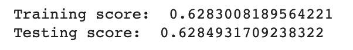

1. Abstract
Note: Sally and I write the first seven sections of the blog post as a group.
Our project aims to predict the energy consumption in Spain. We used the Linear Regression Model and Univariate Time Series Analysis to predict the energy consumption. By comparing the accuracy scores the two models achieved, we found that univariate time series analysis could perform better in forecasting than linear model.
Link to GitHub Repository: https://github.com/Sallyliubj/Energy-Consumption-Forecast/blob/main/Energy_Consumption_Blog_Post.ipynb
2. Introduction
Due to climate change and modernization, people use more energy than before. This may potentially bring a burden to our environment (as more energy will need to be produced), seeing an increase in utility expenses related to energy consumption while affecting our energy generation plans.
According to the 2019 paper “Tackling Climate Change with Machine Learning”, forecasting in energy markets is one of the most impactful areas where machine learning can contribute to the transition towards a renewable-based electrical infrastructure (Rolnick et al. 2022). We think that we could possibly use Machine Learning techniques to predict patterns of energy consumption in order to facilitate energy management, energy generation and potentially, energy-related policy-making so as to bring benefits and efficiency to our environment and society.
Various machine learning algorithms can be adopted to predict energy consumption patterns. Jui-Sheng Chou and Duc-Son Tran mentioned several models in their paper “Forecasting energy consumption time series using machine learning techniques based on usage patterns of residential householders”, such as linear regression models, due to their ease of use, and time series analysis, which is more dynamic and can consider patterns related to certain times of the day, and even year (Chou and Tran 2018).
We expect to adopt some machine learning algorithms in predicting energy consumption and compare their performances.
3. Values Statement
Who are the potential users of your project? Who, other than your users, might still be affected by your project?
- People who seek to reduce their energy consumption or expenditure on energy
- Government or social organizations related to energy.
- Environmental activists.
Who benefits from technology that solves the problem you address?
- The common public who consume energy in daily life.
- Government and energy-related social organizations.
Who could be harmed from technology that solves the problem you well address?
- If companies try to earn more revenues by raising unit electricity price according to the energy consumption prediction, then households will be harmed.
- The prediction might not be applicable to people in some other regions (e.g. prediction based on data from developed countries may not be applicable to undeveloped ones; predictions based on urban areas may not be applicable to rural areas.)
What is your personal reason for working on this problem?
We want to explore the wider applications of machine learning in real life. With concern about our environment and the energy crisis that is impacting the whole world, we hope to contribute to the saving of energy and inform people to pay more attention to energy consumption.
The result of our project may be used to assist in energy management, reduce utility expenditure, and facilitate energy-related decision and policy making.
Based on your reflection, would the world be a more equitable, just, joyful, peaceful, or sustainable place based on the technology that you implemented?
Yes! Because our project could potentially help government to make better environmental policies or arrangements that can possibly reduce energy consumption:
Our world will become more sustainable if energy-saving strategies can be improved based on our prediction.
Households will be able to save more money if they adjust their energy consumption according to our prediction.
4. Materials and Methods
Data
We retrieved our dataset from kaggle.com, “Hourly energy demand generation and weather”.The datasets contain four years of electrical consumption, pricing, and weather data in Spain.
Potential limitations: the dataset only contains data from five cities in Spain, which is more region-specific. If we were to generalize the patterns or adopt our model in other places, we may need to include data from more cities and from different countries, and fit them accordingly.
Approach
What features of your data you used as predictors for your models, and what features (if any) you used as targets.
Linear Regression:
Predictor: Potential Features (filtered)
Target: total load actual
We used the Pearson correlation method to filter features with weak correlation (< 0.2), and drop feature columns with weak correlation.
Univariate Time Series Analysis:
Predictor: total actual load a day ahead
Target: total load actual now
Whether you subset your data in any way, and for what reasons.
We merged the two datasets by “time”, as we believed that both energy generation and weather may affect total load.
What model(s) you used trained on your data, and how you chose them.
First, we chose the linear regression model to train on our data, as we believed that energy consumption might be affected by certain features such as weather, energy generation, and price, etc. So we use linear regression to examine the relationships between them.
We found the result of linear regression not very satisfactory. Then we think that since energy and weather data are recorded every hour, maybe we can do a time series analysis that predicts future energy consumption based on past data. So we tried another approach - univariate time series analysis - to predict energy consumption based on energy consumption in the past. We first only kept the energy consumption data (total actual load) and did train test split. Then, we created the predictor dataset: energy consumption of 24 hours past, and target dataset: energy consumption at current time. We used AutoRegressive model to fit our data, and calculated the mean absolute percentage error to evaluate the performance of the model.
How you trained your models, and on what hardware.
We trained our models using sklearn package or statsmodel package on google colab on GPU.
How you evaluated your models (loss, accuracy, etc), and the size of your test set.
We evaluated our linear regression model by getting its accuracy and computing cross-validation scores to make sure the model was not overfitted. Then we plotted the regression line to visualize how the model performed on the first 100 data points.
We evaluated our time series model by computing the mean absolute percentage error, and plotted the lines both predicted and actual load.
If you performed an audit for bias, how you approached this and what metrics you used.
As our dataset contains records from five different cities in Spain, we wanted to make sure that there was no location bias. We made a barplot to compare the number of records for each city and found that the number of records for each city were similar. So our dataset does not have location bias.
5. Results
Linear Regression

Our linear regression model achieved 63% accuracy. It is hard to determine whether the score indicated good performance or not based on the number itself, so we plotted the regression line and data points.
According to the plot, the data points are scattered evenly, vertically and horizontally across the region. This suggested that the linear regression model might not be the optimal model for the data.
Univariate Time Series Analysis

Our univariate times series analysis achieved the mean absolute percentage error of 13.55. Combined with the plot we have for actual and prediction data, the univariate time series analysis’s prediction seems to have a similar trend as the actual data, which indicated that the model was able to predict the energy consumption with a relatively better performance.
6. Concluding Discussion
Our project involves two models, which considers different aspects of prediction. The linear regression model predicts based on certain features, while the univariate time series model predicts based on past consumption data. We were able to train the models and carry out the scores / errors, so our project works for our goal.
We have met the goals we set at the beginning of the project– we have successfully created a code repository to showcase the machine learning pipeline to predict energy consumption, and have a satisfactory result. We have also tried out both a linear model and a nonlinear model and compared their results, and examined whether additional factors such as weather would affect the prediction.
We compared our results to others’ who used deep neural networks to perform prediction on similar questions on kaggle, and found that our mean absolute percentage error was a little higher. This might be because our model is not as complicated as the other ones that used deep neural networks.
If we had more time, data and computational resources, we would try implementing multivariate time series analysis to examine how other features may affect the consumption of energy.
We might also apply neural networks for our model. We might also use support vector machine for classification and regression.
7. Group Contributions Statement
We don’t have a specific part that one is in charge of. We meet every week and work on the models together on Google Colab. We modify the code together, so we cannot say exactly who worked on what part of the source code, we just worked together.
For the blog post, we also discussed and wrote the drafts together on google doc.
8. Personal Reflection
I learned a lot from the process of researching, implementing, and communicating about my project. First of all, I learned about what aspects I will need to consider when making a project, for example, in what ways can the result of the project benefit our society, and what can be the potential risks or negative sides. I also learned to make plans for the project every week in order to make sure that we are on track. Moreover, I learned the skills and technique I need to implement the project. Specificially, I taught myself how to implement univariate time series analysis. This is something not taught in class, and I managed to implement it with my teammate. In the process, teamwork is also strengthened. The project proposal, warm-ups, project presentation and the blog post all allowed me to learned to explain my approaches in a clear and concise way.
I feel that I learned a lot through the process, and I met the goals I set in my project proposal, but I did not exceed them. I did both linear model and nonlinear model (univariate time series analysis using autoregressive model), which matched my goal. I incorporated weather data to my features for prediction, which also matched my goal. I did not go beyond my goal, but if I had more time, I would try to implement deep neural networks for my project.
The experience of working on this project will definitely be helpful to my future courses, career stages, or even personal life. When working on some project, I will definitely start with a project proposal that clearly states the goals, possible benefits and drawbacks, and possible way of implementation. I will make plans on a weekly basis so that I do not procrastinate too much. I will constantly check the progress with my teammate when it comes to teamwork, and try to work out a solution together. Last but not least, I will not be afraid of having to take on new techniques in a short time for the project, since I know how to teach myself a new skill quickly.